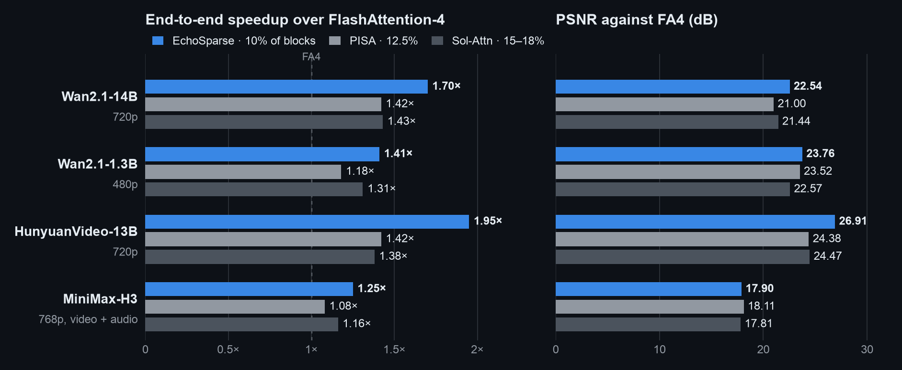

EchoSparse: Letting Last Step's Statistics Steer This Step, Approximating at Multiple Resolutions Instead of Dropping, and Packing Sparse Attention Tightly
By EchoSparse Team
Self-attention in video diffusion models runs over very long sequences. Wan2.1-14B generating a 720p, 81-frame video processes about 75,600 tokens in each attention layer. For a given query, many KV blocks contribute very little.
LLMs have several high-sparsity designs, such as sliding-window attention (SWA) and linear attention like GDN and KDA, but these are mostly built into the architecture at training time. The case we care about is different: a video DiT already trained with dense softmax, whose attention is replaced without retraining. In video, a query's probability mass is often spread over many blocks across space and time; each block is small, but together they are not. Dropping these blocks changes both the numerator and the denominator, and therefore the weighting of the whole row; in training-free replacement this usually shows up in the generated frames. Video models that introduce SWA or linear attention during training are a separate class of methods.
Our work builds on PISA by Haopeng Li et al. (paper, code) and Sol-Attn (project page, paper). Both approximate rather than drop. PISA replaces keep-or-drop with exact-or-approximate: critical blocks are computed exactly and the rest are approximated with a blockwise Taylor expansion. Sol-Attn adds a zeroth-order compensation for unselected blocks and routes with a single token-to-pooled-block score tile. In both, the compensation enters the numerator and denominator of attention, and the representatives of many blocks are already concatenated into GEMMs.
EchoSparse adds three things on top of this:
Reusing the previous step's statistics. Between adjacent denoising steps the statistics of each attention row change very little, so the previous step's LSE (log-sum-exp) and per-block mass can be used in the current step. With the LSE as a fixed softmax offset, the row-max reduction, scale-factor computation and rescaling of old accumulators that a FlashAttention inner loop performs for every KV tile can be removed; the block mass gives the relative importance of blocks.
Multi-level representatives. The number of representatives of a block, mb, need not be 1. It can take the levels 1, 2, 4, 8 up to 64 (the original tokens); more representatives give a finer approximation at a higher cost. The current implementation uses only 1, 4 and 64.
Packing the representatives. Representative computations are fragmented, for example (Bq×d)(d×1), (Bq×d)(d×1) and (Bq×d)(d×4). They can be combined into one (Bq×d)(d×[1+1+4]) computation. Concatenation, data movement and synchronization have costs, though, so the data has to be organized into tiles wide enough for efficient GEMMs, with data movement overlapping compute.
Let N be the full sequence length, d the key dimension and dv the value dimension. Queries are split into tiles of Bq rows and keys/values into blocks of Bk tokens; block b takes part with mb representative rows. In this implementation Bq=128, Bk=64 and d=dv=128. For a query tile Q∈RBq×d and a block Kb∈RBk×d, Vb∈RBk×dv, the exact computation is
Here c∈RBq is a per-row offset, N∈RBq×dv the unnormalized numerator and D∈RBq the denominator; after all blocks, O=diag(D)−1N.
(Bq×d)(d×Bk)(Bk×dv) is only shape shorthand: between the two matrix products there is an elementwise exponential and a normalization shared by the whole row, so it is not an ordinary three-matrix product. In that shorthand, the three options compare as follows:
exact: (Bq×d)(d×Bk) gives BqBk logits, then BqBk exponentials, then (Bq×Bk)(Bk×dv). It reads Bk(d+dv) elements and costs about 2BqBk(d+dv) FLOPs.
drop (SWA, unselected blocks in block sparsity): effectively Bk→0; the block contributes nothing to N or D, and its share of the denominator is missing.
one representative: (Bq×d)(d×1) and (Bq×1)(1×dv). It reads d+dv elements and costs about 2Bq(d+dv) FLOPs, 1/Bk of exact.
Zeroth order and the count
Take one query row q and a block with nb valid tokens (usually nb=Bk; a tail block may have fewer). Let
A representative is therefore the triple (kˉ,vˉ,nb), counted as nb tokens in both numerator and denominator. Mixed with exact tokens, the count can be folded into the logit, giving the representative the logit sˉ+lnnb. The implementation uses exp2 and adds log2nb, which is log264=6 for a full block. Without this term the block's weight is 64 times too small, equivalent to a logit error of ln64≈4.16.
First and second order
Expanding further, eδ=1+δ+21δ2+⋯. At first order the new denominator term ∑jδj is zero, while the numerator term is not:
If these moments are cached explicitly for every block (Bk=64, d=dv=128):
Per-block summary
Cached content (elements)
Value
Per-query application cost
Raw Kb,Vb (exact)
Bk(d+dv)
16,384
O(Bk(d+dv))
Zeroth order kˉ,vˉ,nb
d+dv+1
257
O(d+dv)
First order H
ddv
16,384
O(ddv)
Second order C,T
d2+d2dv
2,113,536
O(d2dv)
At this shape ddv=128×128=Bk(d+dv)=64×256: a per-block first-order moment is as large as the raw block, and applying it to a query tile, a (Bq×d)(d×dv) product, costs about as many FLOPs as computing the block exactly. Uncompressed, the second-order T has d2dv=2,097,152 elements, 128 times the raw block; exploiting the symmetry of its two key indices brings it to d(d+1)dv/2≈1.06 million, still about 64.5 times the raw block. That is the cost of direct caching; rereading tokens instead, or using low-rank or structured approximations, trades it for extra computation or new approximating assumptions.
What PISA actually uses is blockwise zeroth order plus global first order. Let U be the set of unselected blocks for a query tile. Schematically (full blocks, ignoring tails), the ideal blockwise first-order term ∑b∈UesˉbHb⊤q/d becomes (∑b∈Uesˉb)Hˉ⊤q/d. The sum runs over U only, while Hˉ is a global first-order statistic precomputed over the whole sequence and not recomputed for each query's U; with equal full blocks it can be read as the average of the Hb, and the production code applies a count-based scale for tail blocks. Preprocessing forms each Hb and then reduces them, and the attention inner loop loads only that one global matrix. This is also an approximation. On second order, PISA's related work discusses the growth of Taylor feature dimensions in connection with Based and power attention; the table above is our accounting for direct caching and does not mean that PISA's kernel stores per-block second-order tensors.
EchoSparse does not raise the expansion order. It splits a block into more groups, each still approximated at zeroth order, with a variable number of groups mb (Section 3).
2. Reusing the LSE
A FlashAttention-style kernel scans KV tiles and keeps a running row maximum with online softmax. The implementation uses exp2 throughout, and every sij in this section has already been multiplied by log2e. For each KV tile, each row i does:
EchoSparse sets a^i to the log2 LSE of the same layer, CFG branch and row from the previous denoising step. The comparison below follows the fixed-offset path and online fallback.
Use BM=128, BN=64, D=Dv=128 and scale2=log2(e)/sqrt(D); log_count is 0 for original tokens and log2n for representatives. The main SM120 kernel splits a 64-token block into two 32-key halves; the H100 experimental path uses a 64-wide tile.
# Online softmax
m = tl.full((BM,), -float("inf"), tl.float32)
l = tl.zeros((BM,), tl.float32)
acc = tl.zeros((BM, Dv), tl.float32)
for k, v, log_count in kv_tiles:
s2 = tl.dot(q, tl.trans(k)) * scale2 + log_count[None, :]
block_max = tl.max(s2, axis=1)
m_new = tl.maximum(m, block_max)
alpha = tl.exp2(m - m_new)
p = tl.exp2(s2 - m_new[:, None])
l = l * alpha + tl.sum(p, axis=1)
acc = acc * alpha[:, None]
acc = tl.dot(p.to(tl.bfloat16), v, acc)
m = m_new
out = acc / l[:, None]
new_lse2 = m + tl.log2(l)
# Fixed offset
prior2 = tl.load(PREV_LSE2 + rows * H + head)
l = tl.zeros((BM,), tl.float32)
acc = tl.zeros((BM, Dv), tl.float32)
for k, v, log_count in kv_tiles:
s2 = tl.dot(q, tl.trans(k)) * scale2 + log_count[None, :]
p = tl.exp2(s2 - prior2[:, None])
l += tl.sum(p, axis=1)
acc = tl.dot(p.to(tl.bfloat16), v, acc)
out = acc / l[:, None]
new_lse2 = prior2 + tl.log2(l)
Per KV tile, the fixed offset removes:
The row-max reduction: a max over 64 entries for each of 128 rows, logically about 128×63 comparisons plus the cross-lane reduction, and 128 more comparisons for the running maximum.
The scale factors: 128 values αi=2mi−minew. The 128×64=8192exp2 calls for pij are still computed.
The rescale of old accumulators: 128 denominator elements and 128×128=16,384 FP32 elements of the output accumulator.
These are logical amounts of work, not machine instruction counts, and since the accumulator is on chip they do not correspond to memory traffic. They recur with every KV tile: at density 0.10 a query tile has about 118 exact blocks on average, so the exact loop alone accounts for about 1.9 million accumulator multiplies. The only addition is one FP32 history LSE per row loaded before the loop, 512 bytes per tile. QK, the per-score exp2, the row sum, PV, the final normalization by the current denominator, the log2ℓ for the new LSE and the range check after the loop all remain.
The dependencies change as well:
online: S ──> row max ──> m_new ──> exp2(S - m_new) ──> P·V ──┐
└──> alpha ──> scale old O ───────┴──> O
fixed: S ──────────────────────> exp2(S - prior) ──> P·V ──────> O
In the online version pij waits for the tile's row-max reduction, and the old O must be multiplied by α before the new PV is accumulated into it. QK and PV run on the Tensor Cores, while max, reductions and row scaling run on the ordinary execution units and the SFU; sitting between the matrix products, they lengthen the critical path. With a fixed offset only S→exp2→PV remains, which overlaps more easily with data movement and the next QK.
On B200, the current fixed-offset CuTe DSL implementation keeps O in TMEM: every PV MMA accumulates directly into the same tO, zeroed only on the first iteration. In the loop, scores are read from TMEM, the fixed LSE is subtracted, exp2 is applied, and P is converted to BF16 and written back before the denominator is accumulated. Only after the loop is O read into registers, divided by the current row sum, and written out with the new LSE (source); there is no per-iteration row rescale of O.
Why the fixed offset does not change the result
Multiplying numerator and denominator by the same 2−a^i leaves the ratio unchanged:
The final division uses the ℓi accumulated in the current step, not the previous step's denominator, so mathematically any value of a^i gives the same result; floating-point summation and rounding differ slightly. Whether the two steps' LSEs are close affects numerical range: with lsei(2) the current step's log2 LSE, ℓi=2lsei(2)−a^i, so the better the offset, the closer ℓi is to 1 and the less likely pij is to overflow or underflow.
Figure 1. Change of the same row's LSE between adjacent denoising steps (Wan2.1-1.3B, dense FA4, 5 prompts, natural-log units, historical B200 experiment). The points are the seven summaries given in the report; the line is only a guide. Data: REPORT.md §3.
In the middle of denoising the median change is only 0.05–0.1. At step 1 the median is 0.76 and at step 49 it is 0.28, with p99 values of 2.88 and 1.11, and a few (layer, head) rows change by hundreds. The kernel therefore checks log2ℓi after the loop. Tiles outside roughly ±60 are flagged (about 0.5% of tiles according to the README); their selected exact blocks are recomputed with the online recurrence and the skipped-block mean compensation is added back. This does not recompute full dense attention, and it does not keep the four-representative form. On identical block lists, the repository measures about 47% less kernel time.
3. Multi-level representatives
3.1 Multi-level representation
Split the tokens of block b into mb groups and approximate each group at zeroth order with its own K/V means and true token count. Original tokens and representatives are all triples (k~a,v~a,na) in one numerator and one denominator:
o~=∑anaeq⊤k~a/d∑anaeq⊤k~a/dv~a.
mb=1: one mean for the whole block, n=nb;
mb=4: four clusters, each with its own K/V means and count;
mb=64: one token per group, n=1, which is exact.
2, 8, 16 and 32 are also possible levels; the current code implements only 1, 4 and 64. The kernel that builds the four representatives pads the clusters to 16 rows to meet the minimum size of tl.dot.
na must appear in both the numerator and the denominator; empty clusters and padding have lnna=−∞ and weight zero. Exact and compressed terms share one numerator and one denominator. Softmaxing them separately and adding would normalize each part to 1 and lose the relative mass between blocks.
A larger mb means finer groups, not a higher Taylor order. Each group is still a zeroth-order approximation; the logit differences between groups are represented exactly by their own exponentials, and only within-group offsets are approximated. For example, take a 4-token block with logits s=(0,0,2,2) and values v=(1,1,0,0). The exact output is 2/(2+2e2)≈0.119. With one mean, the mean logit is 1 with n=4, and the output equals the mean v, 0.5. With two groups (0,0) and (2,2), n=2 each, the result equals the exact value because the logits within each group are equal. In general, for a fixed query, if all keys in a group have the same logit, the count-weighted representative reproduces that group exactly; identical keys are only a sufficient condition. One token per group is the exact block again.
Each block reads mb(d+dv) elements and costs about 2Bqmb(d+dv) GEMM FLOPs. The final output error also depends on within-group logit variance and K/V correlation, so the representative count alone does not determine it.
3.2 Choosing mb=1, 4 or 64
For query tile a and block b define
Mab=i∈a∑j∈b∑esij−ci,ci=(ln2)a^i,
in natural-log units: sij=qi⊤kj/d is the ordinary logit, and ci is the previous step's LSE obtained by converting Section 2's log2 LSE a^i to natural log; the kernel's pij=2sij(2)−a^i (with sij(2)=sijlog2e) is the same number as esij−ci. Mab is an unnormalized block mass scaled by the historical LSE. When the prior is close to the true LSE it is close to the total probability that tile a's rows put on block b, but it is not the exact normalized probability of the current step.
The mass map is not produced by a separate full scoring pass; it comes out of the current step's computation:
Exact blocks: esij−ci is already on a probability scale, so while computing the selected blocks the kernel sums pij per 64-token block, which gives Mab for those blocks.
Skipped blocks: they have no exact sij. estimate_skipped samples a few rows per query tile, estimates the skipped blocks' mass from block means, and calibrates the estimate on the blocks computed exactly in the same tile, with the calibration factor clamped to [1,64].
The two parts are then rescaled per tile by aggregating exp(ci−LSEinew), where LSEinew is the natural-log LSE computed in the current step (2^(prior2 - new_lse2) in the log2 implementation), giving the mass map for the next step.
The next step allocates by mass ranking. With nblk blocks and density ρ, the round(ρnblk) highest-mass blocks and their local neighbors are exact; the most probable third of the remaining blocks get four representatives; the rest get one mean. No block is dropped. This allocation is a ranking heuristic, not an optimum derived from an error formula.
Figure 2. The LSE serves as the fixed offset and the block mass sets each block's resolution; the kernel's output gives the next step's LSE and block masses.
Each (CFG branch, layer) keeps its own state, and later CFG branches can reuse branch 0's block selection. By default the first 9 steps run dense FA4; step 10 sends every block through the fixed-offset EchoSparse kernel, which gives an exact output and builds the first mass map; sparse computation starts at step 11.
Figure 3. Historical B200 experiment: two-branch CFG forward time per denoising step for Wan2.1-1.3B (median and range of three runs). The sparse arm is the early single-mean version, not the current four-representative or packed configuration. Data: curve13.json.
3.3 Clustering and error
Consider a group C of n tokens with the notation of Section 1: group means kˉ,vˉ, sˉ=q⊤kˉ/d, δj=q⊤(kj−kˉ)/d, and ECδ=0. The exact and representative denominators are
The first-order term cancels because the plain mean is used, so the leading denominator error is the within-group logit variance. If ∣δj∣≤r, then eδ−1−δ=21δ2eξ gives
0≤ZC−ZC≤2nesˉ+rECδ2.
The lower bound is Jensen's inequality: a representative always underestimates its group's denominator. The numerator error also depends on the values:
NC−NC=nesˉ[CovC(δ,v)+21EC(δ2v)+⋯].
The first term is the within-group first-order moment HC⊤q/(nd). The block's first-order moment splits into within-group and between-group parts:
Hb=C∑HC+C∑nC(kˉC−kˉb)(vˉC−vˉb)⊤.
With mb groups, the between-group part is represented exactly, at every order, by each group's own center and exponential, using mb(d+dv) storage and no d×dv matrix. The remaining error comes from the within-group HC, the within-group variance and higher-order terms, all of which vanish with one token per group. Compared with Section 1: instead of storing a ddv first-order moment per block, a few columns can split the block.
These are local, per-group relations. The row's output passes through a shared denominator and the group errors interact, so no convergence law for the layer output in m follows. What they give is a clustering objective: within a group, the logits the queries see should be as uniform as possible.
Attention uses a key only through q⊤k, and two keys can be far apart in Euclidean distance yet produce nearly identical logits for the queries, so Euclidean k-means on K is not used directly. Let q~=q/d and G=E[q~q~⊤]. For a key offset Δk (a column vector),
Eq[(q~⊤Δk)2]=Δk⊤GΔk=∥M⊤Δk∥2,G=MM⊤.
The within-group logit variance averaged over queries is then
EqECδ2=n1j∈C∑M⊤(kj−kˉ)2,
the k-means objective in the transformed coordinates xj=M⊤kj (X=KM with keys stacked as rows of K). A linear map sends means to means: for any fixed grouping, the ordinary mean in X is the transform of the ordinary K mean, so under this variance objective, clustering in X and writing back plain K means are consistent.
In the implementation, G is built per head from the current query distribution, not per query tile. The Cholesky factorization is of Gϵ=G+ϵI with ϵ equal to 10−3 times the mean diagonal, so
∥Mϵ⊤Δk∥2=Δk⊤GΔk+ϵ∥Δk∥2,
a small Euclidean term added to the query metric. Each 64-token block is split into 4 groups: starting from four contiguous 16-token groups, 64 probe queries weight each token, and at most 6 weighted Lloyd iterations run. Weighted Lloyd assigns tokens using weighted centroids, which differ from the plain means written back at the end; the representatives written back are plain within-group means of K and V, and na is the true token count, which keeps the unified formula valid. Weighted Lloyd is thus a grouping heuristic that borrows the metric above. It finds a local solution and guarantees neither that the final attention error is minimized nor that the error falls monotonically, case by case, as m grows.
4. Packing: turning 1+1+4 into six columns
The experimental shape N=75600 has nblk=1182 blocks of 64 tokens (padded capacity 75,648). At density 0.10 there are about 118 exact blocks, about 118×64≈7.6 thousand columns. Of the other ~1064 blocks, about a third use four representatives, roughly 355 blocks and 1420 columns; the remaining ~709 blocks contribute one column each. The compressed columns total 1420+709=2129, matching the recorded average. Each tile handles about 9.7 thousand columns, under 13% of dense; the compressed columns are about a fifth of these but the most fragmented, with 1 column for some blocks and 4 for others.
Computed block by block, they form a series of small (Bq×d)(d×1) and (Bq×d)(d×4) products, far narrower than one Tensor Core MMA. The smallest example shows how to form (Bq×d)(d×[1+1+4]). Blocks 1 and 2 each have one mean representative and block 3 has four. Stack them:
c is the per-row offset of Section 1, which in EchoSparse is the historical LSE in natural-log units, ci=(ln2)a^i; the equivalence below holds for any fixed offset. The six columns of QK∗⊤ are the columns of the three small products; the exponential and the count correction are elementwise; and writing W by columns as [W1W2W3],
so the three blocks' numerator and denominator contributions are added into the same N and D. n∗ must travel with the columns into both numerator and denominator, and exact tokens accumulate into the same N and D, with one division after everything is scanned. Adding the outputs of three separately softmaxed blocks is a different computation, in which each block is normalized to 1.
Under the same sparse plan, representative K/V, multiplicities and unified normalization, packing is therefore only a regrouping: the output is mathematically the same and no new approximation is introduced. EchoSparse's approximation relative to dense comes entirely from the representative compression of the previous section. The changed summation order causes slight rounding differences.
Six columns are far from a Tensor Core tile, so tiles have to be filled across many blocks. The experimental branch processes 128 columns per iteration: the mean stream gathers the means of 128 blocks at a time and the four-representative stream 32 blocks of 4 columns each, and only the last iteration of each stream needs a mask.
The released nonpacked path has three loops: the exact block list; a scan over the means of all blocks, 128 columns at a time, masking the columns of exact and four-representative blocks; and the four-representative block list, one id per block expanded to 4 columns and padded to a fixed width. In the plan used here, each tile walks 1280 mean columns and 1536 representative columns, 2816 in total, of which 2129 are useful on average, about 76%. Masked columns need not move data, but MMAs issue at a fixed shape, so their cost remains.
Figure 4. Schematic: the same terms arranged as three nonpacked loops and as two grouped streams; column counts not to scale.
The experimental grouped packing builds two compact descriptor streams for each (query tile, head). In the mean stream one block id maps to one column; in the four-representative stream one block id maps to 4 columns, with addresses expanded on chip as 4⋅block+sub. The earlier per-column packed stream stored one index per representative column, 4 ids per four-representative block, whereas grouped stores 1; the nonpacked four-representative list already used one id per block. Keeping the two sources in separate loops also spares mixed tiles a masked load on both source tensors.
What is packed is descriptors and indices. The representative K/V are not copied into a contiguous tensor, and each iteration still gathers them by index.
5. Data movement and pipelining
Copying the representative K/V each tile needs into a contiguous tensor would allow whole-block transfers like those for exact blocks, but the copy costs a read and a write, and the kernel then reads the copy again; moreover, the selection differs for every (query tile, head). At an average of 2129 columns per tile and d+dv=256 BF16 values per column, a tile needs about 1.09 MB, so materializing once per tile for 591 query tiles and 40 heads writes about 26 GB. The main kernel's total DRAM read recorded by NCU on the same plan is about 9.7 GB.
Without a copy, small transfers still have fixed costs: descriptors and address arithmetic, alignment, barriers that signal data arrival, and shared-memory buffers. The more fragmented the work, the harder these are to amortize. Useful columns therefore have to be gathered into wide enough tiles first, and data movement then has to overlap compute.
Let each iteration take tℓ to load and tc to compute, over n iterations. Serial execution takes n(tℓ+tc). Assuming constant per-iteration times and ideal overlap, a two-stage pipeline takes about
tℓ+(n−1)max(tℓ,tc)+tc+tsync,
where the first and last terms are fill and drain (excluding tsync, n=1 reduces to the serial tℓ+tc), and tsync stands for waits and barriers that are not hidden. When n is small, fill and drain take a large share. By the counts above, a tile's exact loop runs about 118 iterations, the mean stream about 6 (709/128) and the four-representative stream about 12 (355/32). At the Wan2.1-14B shape the exact loop accounts for about 73% of the columns executed by the nonpacked baseline (7552/(7552+2816); about 78% of grouped useful columns), so pipelining is applied to the exact loop first.
H100's TMA (Tensor Memory Accelerator) describes a tensor shape with a descriptor and moves a whole tile into shared memory asynchronously in dedicated hardware. K and V are laid out as [N,H,D]; a 64-token block is a rectangular tile described by the original tensor strides (not contiguous along the token dimension when H>1), fetched by a descriptor with block shape [64,1,D] at row offset 64⋅block.
Figure 5. Schematic timeline of the three-stage software pipeline in the exact block loop (not measured); TMA applies only to exact blocks.
The experimental branch currently loads exact blocks through TMA, overlaps loads with dots in a three-stage software pipeline, and gathers representative columns by pointer through the grouped descriptors. The three stages are generated by Triton's software-pipelining scheduler and are three slots of a ring buffer: block 3 can enter a slot only after block 0 has been consumed and released it; compute waits for data to arrive, and loading waits for a free slot. TMA without pipelining barely helps (main kernel 57.15 ms versus 57.22 ms); only the combination is effective, and going from 3 to 6 stages leaves the time essentially unchanged.
In NCU measurements of the same Wan2.1-14B plan, adding TMA reduces the instruction count from 10.42 G to 9.79 G and the main-kernel time from 39.06 ms to 35.64 ms. Barrier and wait still account for about 40% of warp cycles: synchronization remains a major cost after reducing the load instructions.
The representative stream can use a producer–consumer design: producer warps gather upcoming columns through the grouped descriptors and arrange full-width tiles in three shared-memory slots; consumer warps run QK, exp2 and PV on ready slots, accumulating into the same N and D, then return each slot. The consumer waits for data; the producer waits for a free slot.
6. Results
A single attention call on H100 (experimental branch)
Synthetic BF16 inputs of shape [B,N,H,D]=[1,75600,40,128], non-causal, density 0.10, median of 20 timings; the sparse timings cover the whole GPU flow, including representative construction and packing. The last two rows share one frozen sparse plan and compare implementations, so the 1.61× comes from packing and pipelining; the dense row computes all original tokens, so the 3.67× also includes the gain of sparsity itself. This is a single attention call and does not imply the same speedup for whole-video generation. Raw record: evidence/h100_attention_benchmark.json.
Whole-video generation on B200 and RTX 5090

B200 released results: 50-step whole-video generation compared with Sol-Attn and PISA, with PSNR against dense FA4.RTX 5090 released results: single GPU, one fixed prompt and seed per model, 50-step generation; the PSNR panel lists the B200 value for the same prompt alongside.
For Wan2.1-14B the whole-video speedup is 1.70× on B200 and 1.39× on RTX 5090 (1.61× for a single sparse-step forward of the same model). The two evaluations are set up differently: on RTX 5090 each model runs a single prompt, and Wan2.1-14B, HunyuanVideo and MiniMax-H3 use CPU weight offload, so the two numbers are not a same-prompt hardware comparison.
7. Summary
Attention in video diffusion models is better approximated than dropped: the low-weight blocks are numerous and together still affect the numerator and denominator, and count-weighted representatives keep them in the same softmax instead of zeroing them. Approximation also need not mean fragmented computation: 1- and 4-column representatives can be packed into full GEMM tiles that share the numerator and denominator with exact tokens, without changing the result. LSE values are usually close between adjacent denoising steps, so the previous step's LSE can serve as a fixed offset that removes the max and rescale of online softmax, and the block mass decides how many representatives each block gets.
The full packed producer–consumer path is still under exploration and has not been implemented or released. H100 and RTX 4090 support is also pending.